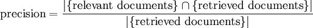

Two concepts come up when talking about information retrieval in most standard documentation, Precision and Recall. Precision is a measure that tells you if your result set contains only results that are relevant to the query, and recall tells you if your result set contains everything that is relevant to the query.
The formula for classical precision is:

However, I would argue that the classical notion of Precision is flawed, in that it doesn't model anything we tend to care about. Rarely are we interested in binary classification, instead we want a ranked classification of relevance.
When Google tells you that you have a million results, do you care? No, you skim the first few entries for what it is that you are looking for, unless you are particularly desperate for an answer. So really, you want a metric that models the actual behavior of a search engine user and that level of desperation.
There are two issues with classical precision:
- the denominator of precision goes to infinity as the result set increases in size
- each result is worth the same amount no matter where it appears in the list
The former ensures that a million answers drowns out any value from the first screen, the latter ensures that it doesn't matter which results are on the first screen. A more accurate notion of precision suitable for modern search interfaces should model the prioritization of the results, and should allow for a long tail of crap if the stuff that people will look at is accurate over all.
So how to model user behavior? We can replace the denominator with a partial sum of a geometric series for probability p < 1, where p models the percentage chance that a user will continue to browse to the next item in the list. Then you can scale the value of the nth summand in the numerator as being worth up to pn. If you have a ranked training set it is pretty easy to score precision in this fashion.
You retain all of the desirable properties of precision. It maxes out at 100%, it decreases when you give irrelevant results, but now it effectively models when you return irrelevant results early in your result list.
The result more accurately models user behavior when faced with a search engine than the classical binary precision metric. The parameter p models the desperation of the user and can vary to fit your problem domain. I personally like p=50%, because it makes for nice numbers, but it should proabably be chosen based on sampling based on knowledge of the search domain.
You can of course embellish this model with a stair-step in the cost function on each page boundary, etc. — any monotone decreasing infinite series that sums to a finite number in the limit should do.
A similar modification can of course be applied to recall.
I used this approach a couple of years ago to help tune a search engine to good effect. I went to refer someone to this post today and I realized I hadn't posted it in the almost two years since it was written, so here it is, warts and all.
If anyone is familiar with similar approaches in the literature, I'd be grateful for references!
From the original discussion
Selected questions, explanations, and corrections. Original wording and dates; spam and automated trackbacks omitted.
Wren:
Yeah, you’ve got the metric. I used this once a couple of years back to pretty good effect.
That is a very good point about diversity. The metric I actually used did a much simpler version of what you proposed in that I just considered a pre-ranked training set. And if you found an item that should be ranked up to, say, 4th in the 3rd slot you earned 3/4ths of the points, clamped to 1. Ties can them be allowed in the list of expected rankings when the distinctions between them aren’t clear. This doesn’t address diversity directly, but it does ensure that you can reach 100% precision given perfect ordering.
Pseudonym:
I agree, although the precision metric for a given recall level can be calculated using the same machinery.
I’m happy to learn though. References are welcome! I hardly suspect that I came up with anything novel during a 2 hour whiteboard session two years back and a similar amount of time hacking things up in perl. ;)
I just haven’t seen anything similar written up.
Hello Bob,
Thanks for the references! The TREC IR Measures overview seems to be exactly what I was looking for.